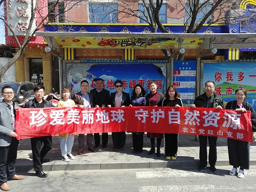

4月22日是第50个“世界地球日”，为进一步提高市民环保意识，全面树立节约资源意识，引导公众增强“绿水青山就是金山银山，人与自然和谐共生”理念，农工党红山区支部组织20名党员走上街头，开展“珍爱美丽地球·守护自然资源”主题宣传活动，并发放宣传单1000份。

活动中，党员代表从拒绝空气污染、使用一次性餐具，垃圾分类，光盘行动，绿色低碳生活等方面结合自身实际谈心得体会。就自然资源如何保护和高效利用，实现经济社会可持续发展提出了可行性意见建议。
此次活动让广大市民朋友对节约能源资源重要性有了更深入的认识，提高了市民对日常生活中节能宣传的兴趣，充分调动了居民参与节能宣传活动的积极性、主动性，让居民了解了有关绿色生活、低碳生活等知识。同时也是农工党红山支部认真履行参政党职责，参与社会服务，为幸福红山建设贡献力量的重要体现。